9 de noviembre de 2026. La app real no se tocó: todo vive en docs/maquetas/bosque/ con datos de demostración.
| Ruta | Qué hace | Hojas y estados que tiene |
|---|---|---|
/login, /auth/confirmar | Entrar; aceptar una invitación y elegir clave | Error de clave, enlace vencido |
/ «Hoy» | Lo vendido, cobrado y lo que te deben; avisos de stock; «Lo último»; el botón de voz | Esqueleto, vacío, error, sin conexión. La voz: escuchando, entendiendo, tarjeta (venta, abono, compra, merma, gasto, consulta), dudas, sin permiso, «no te entendí» |
/clientes, /clientes/[id] | El cuaderno: quién debe y cuánto; la ficha con el historial | Alta y edición de cliente, abono a mano, 404 «No encontré a ese cliente» |
/stock | Cajas por fruta y qué conviene hacer | Compra a mano, merma a mano |
/ventas | Hoy y 7 días, contado y crédito | Detalle, anular con motivo, boleta o factura (pedir RUC, rechazo) |
/cierre | La caja del día y el mes en Excel | Enviar por WhatsApp, exportar |
/ajustes | Catálogo y equipo | Aviso para quien no es dueño ni administrador |
| Menú «Más» | Cierre, Ajustes, aviso del día, instalar, salir | — |
No hay una sección «Cobranzas»: cobrar vive en Clientes (el cuaderno) y en los abonos. La maqueta la deja ahí y «Te deben» lleva a ella.
VozHoy al marco: toca a todos los módulos (CLAUDE.md pide confirmarlo). Hay que medir que «Hoy» no crezca en JS.COLOR_DE_FONDO de #eef3f8 a verde bosque). Los teléfonos que ya instalaron la app ven el ícono nuevo recién cuando el navegador actualiza el manifest (días).CLAUDE.md pide 7:1 en cifras clave y 4.5:1 en lo demás, porque se usa al sol.
| Token | Color | Uso | Contraste |
|---|---|---|---|
| bosque | #103D29 | Identidad, cabecera, botón principal, lo vendido | 11.2:1 sobre marfil |
| profundo | #082C1E | Fondo del degradado de la cabecera | 13.9:1 con marfil encima |
| marfil / marfil cálido | #F7F5EE · #EEECE2 | Fondo y rellenos suaves | — |
| tarjeta | #FFFEFA | Superficies, con borde #E4E1D4 | — |
| lima | #D5F45A | UNA acción por pantalla (Ver stock, Entrar, WhatsApp), el orbe, «Nuevo» | Nunca texto: 1.1:1 sobre marfil. Con texto bosque encima, 9.8:1 |
| positivo (texto) | #185A31 | Cobraste, Pagó, abonos | 7.6:1 (el #348B50 del prompt daba 3.9:1: queda solo para rellenos) |
| deuda | #8E1F2A | Te deben, Lo debe | 8.1:1 (el #A52B35 del prompt daba 6.4:1) |
| aviso | #8A4A0C | Reponer, merma, sugerido | 6.3:1 |
| texto / texto-2 | #17251D · #56625A | Texto principal y secundario | 14.6:1 · 5.9:1 (el #667269 daba 4.25:1 sobre marfil cálido) |
| Qué | Tamaño | Nota |
|---|---|---|
| Título de pantalla | 34 px, 800 | Con la barra lima a la izquierda |
| Lo vendido, total de la tarjeta, saldo de la ficha | 36–40 px, 800, tabular | Baja a 32 px solo si no entra a 360 px |
| Cifras clave (cobraste, te deben, stock) | 28–30 px | CLAUDE.md: 28 px o más |
| Texto base | 17 px | El prompt pedía 12–14 px en descripciones; se queda en 15–17 por el sol |
| Barra de abajo | 13 px, 800 | 12.5 px bajo 380 px de ancho |
python3 -m http.server 4321y abre
http://localhost:4321/docs/maquetas/bosque/. En tu celular: conéctalo al mismo wifi, corre el servidor con --bind 0.0.0.0 y abre http://<IP de la Mac>:4321/docs/maquetas/bosque/app.html.Qué se puede hacer:
Verificado con Playwright a 360, 375, 390, 412 y 430 px en las 8 pantallas: sin errores de JavaScript, sin scroll horizontal, sin cifras cortadas y sin controles de menos de 44 px. El flujo de voz se probó de punta a punta, con «no te entendí», sin permiso y sin señal.
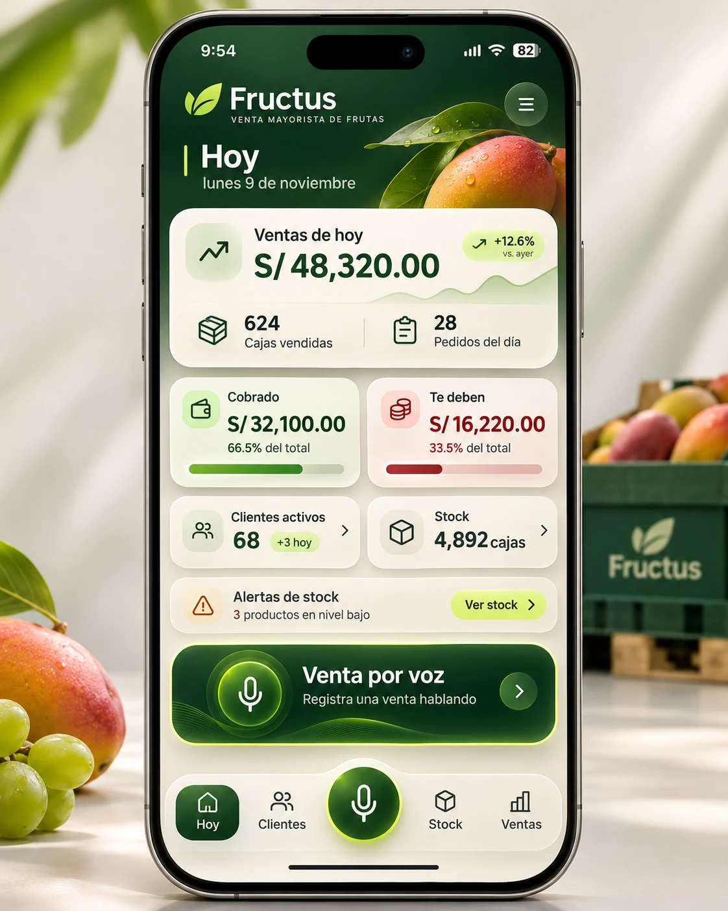
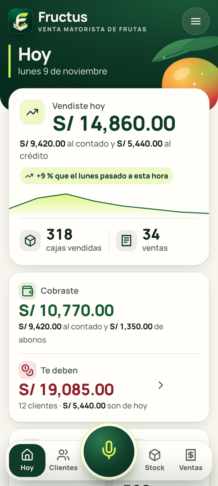
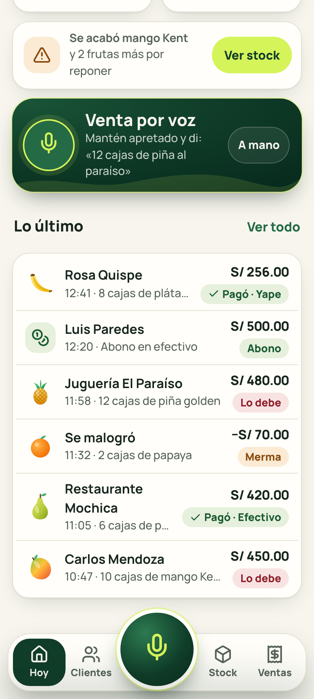
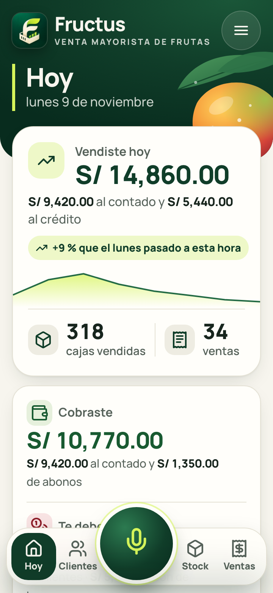
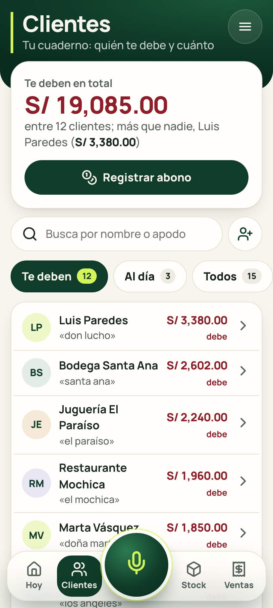
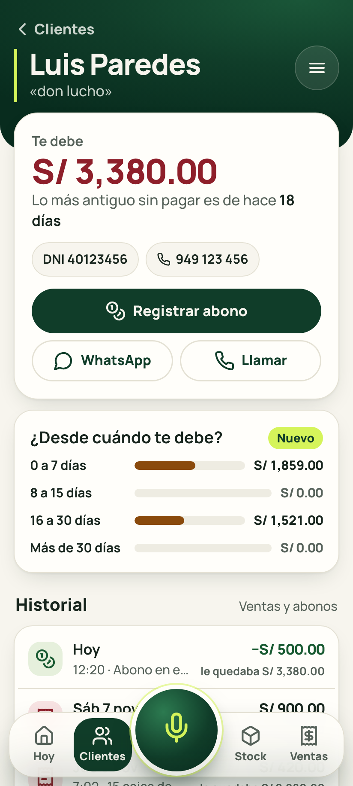
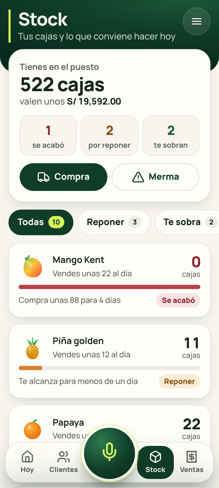
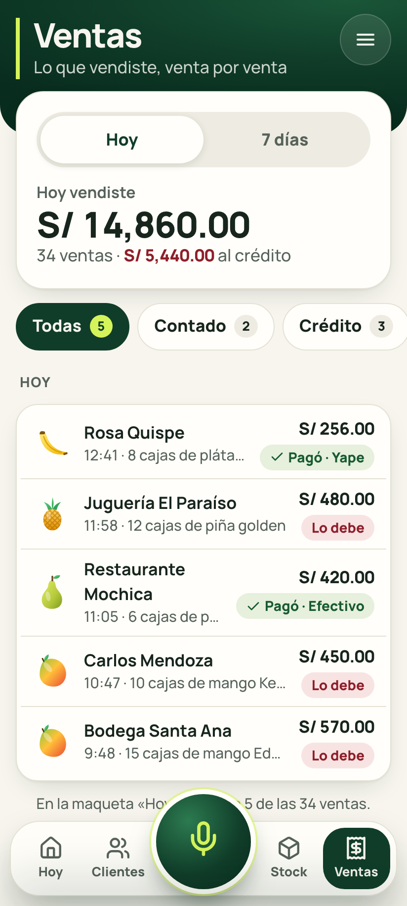
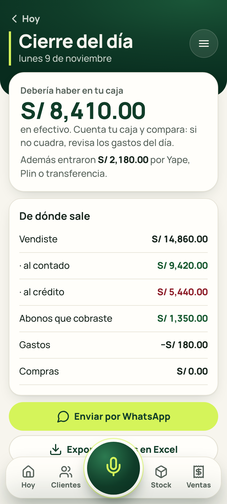
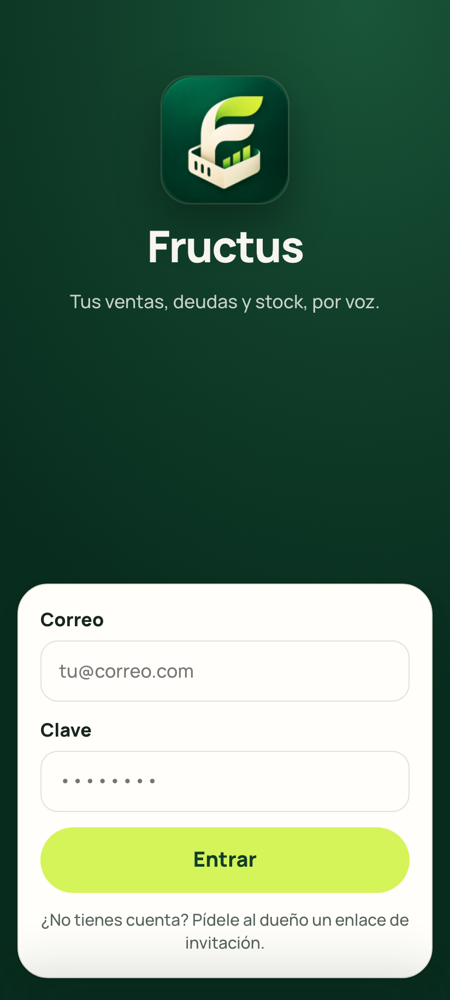
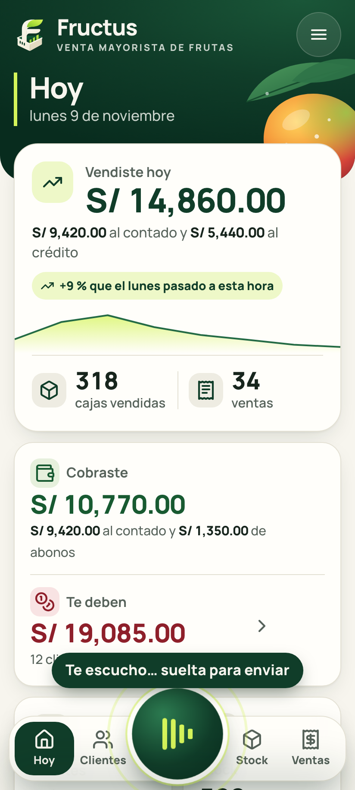
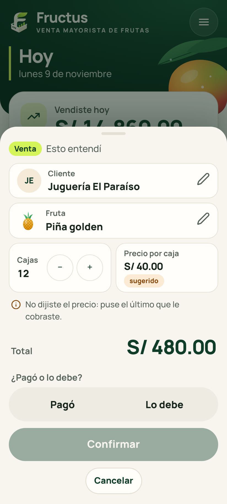
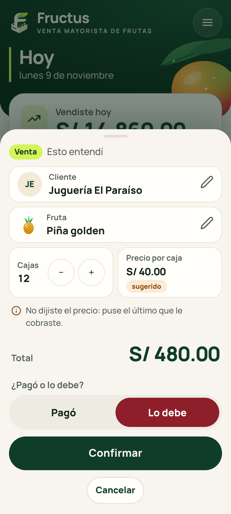
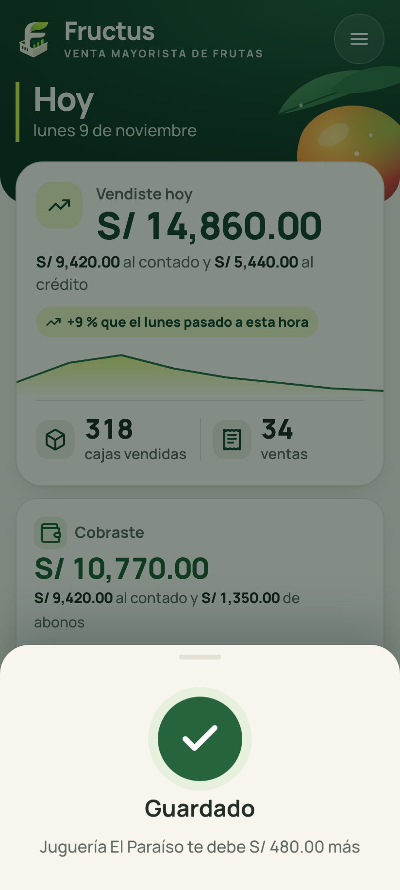
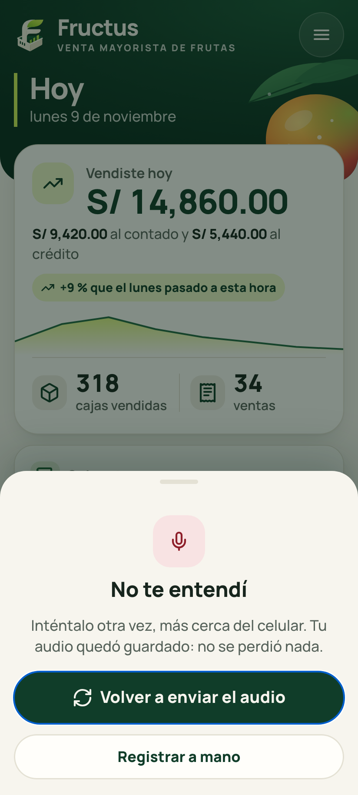
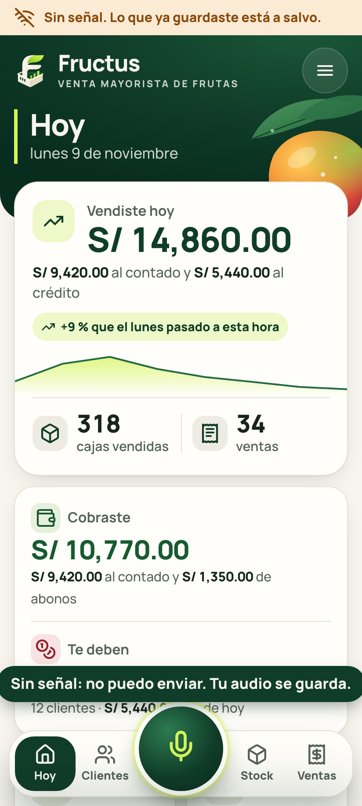
/construir, una actividad por commit)| # | Actividad | Archivos | Cómo se demuestra |
|---|---|---|---|
| 1 | Tokens Bosque claro y oscuro, variables de shadcn, fondo marfil sólido (sale FondoAurora). ADR-0014 reemplaza ADR-0007 | app/globals.css, components/ui/FondoAurora.tsx, app/(app)/layout.tsx, docs/adr/0014-… | Contraste medido, medir:pintura, capturas a 412 y 360 px |
| 2 | Logo elegido (la F que brota de la caja): los PNG de docs/maquetas/bosque/logo/ (recortados de la imagen aprobada), favicon, apple-icon y color del manifest | public/logo/, scripts/generar-iconos.mjs, public/icons/*, app/icon.png, app/apple-icon.png, app/favicon.ico, lib/pwa-reglas.ts | pnpm e2e:prod (pwa), instalada en el S25 |
| 3 | Marco: cabecera bosque (grande y compacta), barra nueva y voz en todas las pantallas (rol contador sin orbe) | components/marco/Encabezado.tsx, BarraInferior.tsx, components/voz/VozHoy.tsx → marco, app/(app)/layout.tsx | e2e de marco y roles, medir:js ≤ 180 KB |
| 4 | Piezas: Boton (variantes), Tarjeta, Insignia, Monto, Filtros, Hoja, Vacio, Aviso, Esqueleto | components/ui/* | /piezas en claro y oscuro |
| 5 | Hoy: nueva composición y comparación con el lunes pasado a la misma hora | components/hoy/*, lib/comparacion-reglas.ts (+ prueba) | Vitest, e2e de Hoy, /formidable |
| 6 | Voz: orbe, tarjetas (venta, abono, compra, merma, gasto, consulta) y estados | components/voz/* | e2e de dictar, /chaos, /voz-precision (sin cambios en el prompt) |
| 7 | Clientes y ficha; «¿Desde cuándo te debe?» solo con tu OK (regla de dinero nueva) | components/clientes/*, lib/antiguedad-reglas.ts (+ prueba) | e2e de clientes, /formidable, /chaos |
| 8 | Stock, Ventas, Cierre (frase para la caja negativa), Ajustes, Entrar e invitación | components/inventario/*, components/ventas/*, components/cierre/*, app/login/* | e2e de cada pantalla, /formidable, /chaos |
Después de esto vuelve el diseño de escritorio (docs/maquetas/escritorio/): habrá que redibujar esas maquetas con Bosque.